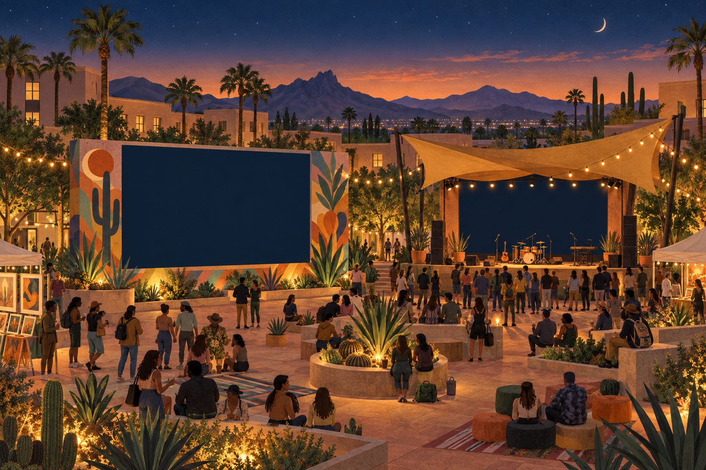

A LITTLE LOGIC. A BIG NIGHT.
Campus Festival
Two installations. One fast cable.
Make every connection count.About 2 minutes · Untimed · No course points

The courtyard is ready. Your connections bring the visuals.
YOUR CABLE KIT
Same shape.
Different possibilities.
Select a cable to begin.
Read the label.
A USB-C shape alone
doesn’t tell you the speed.
Bring both to life.
Pick a cable from your kit, then choose an installation. Meet both transfer targets.
Both cables fit. Check their speeds before you connect.
Targets describe the transfer, not your thinking time.
YOU MADE IT HAPPEN
Small choices. A brighter night.
You gave the big file the fast connection. Both installations are ready.
The shape tells you what fits. The supported speeds tell you what works.
How do the transfer estimates work?
8 bits = 1 byte. Multiply a file’s size in GB by 8 to get Gb, then divide by the connection’s rate in Gbps.
For example: 2 GB × 8 ÷ 5 Gbps = 3.2 seconds. And 480 Mbps = 0.48 Gbps.
We use decimal units and ideal transfer estimates. Actual copies take longer. Each station here has its own independent connection. The host, cable, and destination must support a common transfer mode.